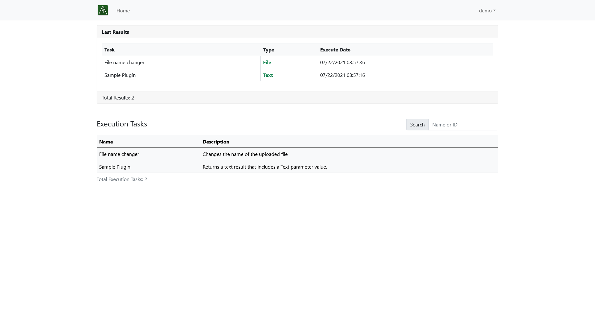

Shearlegs
Shearlegs is an open-source workload management service designed to streamline users and developers experience in creating and sharing self-contained programs.
Demo
We are hosting live demo of Shearlegs master branch which is automatically upgraded within every push to master branch.
